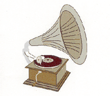

Rochdale Gramophone Society

The Society was started by Mr Frank Walkden who was then living in Milnrow.
He had an EMG gramophone which had a huge horizontal horn. He and two
friends met over a glass of beer in the Commercial Hotel and it was proposed
to try to form a gramophone society. They canvassed a group of friends
and advertised in the Rochdale Observer. The response was one, a Miss
McCormick from Balderstone, who joined and remained a member until her
marriage.
The first meeting was in the Drake Hotel in November 1931. On the night
of the first meeting the EMG gramophone, which had been ordered, had not
arrived. The railway people had failed to deliver it in time for the meeting
and Mr Walkden had to run up to the Fishwick Street sidings to collect
it. There was a right to-do in persuading the night staff to allow him
to take it away, but they did and the waiting members had an exciting
time trying it out.
Jack Tattersall joined in 1952 and over the intervening years held, at different times, the posts of Chairman, Secretary and Treasurer. In 2001 he was elected as Honorary President of the Society in recognition of his many years of work and support. Sadly Jack died in 2016 having completed 62 years of continuous membership of the Society.

Jack Tattershall
These days
the music is almost all played from CDs but some programmes feature DVD
presentations. The original EMG gramophone mentioned above was finally
sold on Ebay about 15 years ago for £1200.
Although the Society's membership has shrunk to only 8 members there is
still an active programme of 22 meetings each year. One of the current
members, Roy Smithson, has been a member for over 60 years.

Roy Smithson